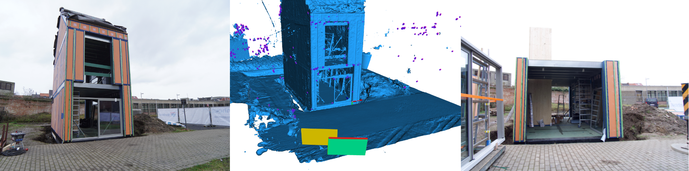

Alignment Tools
A sample file going over all the step to properly use the tools.
The alignment process is aimed at aligning multiple sessions containing both 2D images and 3D geometries. We assume a single session contains locally aligned data. This means that if a small subset of the data is aligned all the rest is also aligned in that coordinate system.
Step 1: Gather the Test Inputs
The test session with all the pictures and coordinates as a
SessionNode()The global coordinates of the device
Step 2: check for relevant Reference data
use the global coordinates to find all the reference data that is geo-referenced close enough (GPS precision)
Step 3: 2D Check
Compare all the test images against all the reference images
Find which session has the highest match rate
Find which Image has the highest match rate
Calculate the transformation between the two images
calculate the inverse transformation to give the test data a Reference global position
Step 4: 3D Check
Compare the test mesh against relevant point clouds
Compare the test mesh against BIM models
Perform a CCP for the final alignment
Step 5: Choosing final Position
Use the different results from all the methods to come to a best position
Send the Position and rotation back to the device
Overview
classes
geomapi.nodes.SessionNode()The starting point, containing the global position, boundingbox and all the resources.geomapi.alignmenttools.Match()The base class for 2 connected nodes, containing the match parameters and nodes.This has 2 child classes:
geomapi.alignmenttools.ImageMatch()&geomapi.alignmenttools.GeometryMatch()
geomapi.alignmenttools.PoseEstimation()an estimated pose based on a number of matches
Functions
find_close_sessions()Read all rdf files or sessions to get the global position and boundingbox and compare it to the given bounding volume
we need to get all the graphs or RDF files and read their bounding box variable
pos2d.get_transformation()Combines all the 2D transformation algorithms into one function
pos2d.match_incremental()pos2d.match_crossref()pos2d.match_raycast()
pos3d.get_transformation()Combines the 3d transformation algorithms into one function
pos3d.match_fgr()pos3d.match_super4pcs()
Setup
Importing the required packages and modules
from context import geomapi
import geomapi.tools.alignmenttools as at
testSessionPath = "test/testfiles/sessionGraph.ttl"
refSessionsPath = "test/testfiles/graphs/"
Getting the Sessions
Most higher level functions revolve around geomapi.nodes.SessionNode
It is also possible to work directly with the geomapi.nodes.ImageNode or geomapi.nodes.GeometryNode
testSession = geomapi.nodes.SessionNode(testSessionPath)
refSessions = geomapi.nodes.SessionNode(refSessionsPath)
figure 15: flgvliz
Single Function
estimate_session_position() Is a compound function that combines the above mentioned workflow into one.
finalPos = at.estimate_session_position(testSession, refSessions)
testSession.cartesianTransform = finalPos
Step-by-step
The full alignment algorithm is performed in 4 steps: Subselection, 2D Pose, 3D Pose, Pose Weighting
Step 1: check for relevant Reference data
use the global coordinates to find all the reference data that is geo-referenced close enough (GPS precision)
Step 2: 2D Check
Compare all the test images against all the reference images
Find which session has the highest match rate
Find which Image has the highest match rate
Calculate the transformation between the two images
calculate the inverse transformation to give the test data a Reference global position
Step 3: 3D Check
Compare the test mesh against relevant point clouds
Compare the test mesh against BIM models
Perform a CCP for the final alignment
Step 4: Weighting final Position
Use the different results from all the methods to come to a best position
Send the Position and rotation back to the device
Step 1: check for relevant Reference data
use the global coordinates to find all the reference data that is geo-referenced close enough (GPS precision)
closeSessions = at.find_close_sessions(testSession, refSessions) # Returns a subselection of the given referenceSessions
Step 2: 2D Check
The function pose2d.get_transformation() calculates estimations for every image in the test session, creating a large amount of poses, each with specific matching parameters.
2D Checks can also be performed seperatly using the 3 different Algorithms:
Incremental Matching
Cross Reference Matching
Raycast Matching
estimated2DPoses = at.pose2d.get_transformation(testSession, closeSessions)
Incremental reference Matching
incrementalPoseEst = at.pose2d.match_incremental(testSession.images[0], closeSessions[0].images)
Cross reference Matching
crossrefPoseEst = at.pose2d.match_crossref(testSession.images[0], closeSessions[0].images)
Raycast Matching
raycastPoseEst = at.pose2d.match_raycast(testSession.images[0], closeSessions[0].images)

Step 3: 3D Check
The function pose3d.get_transformation() calculates estimations for every geometry in the test session, creating a large amount of poses, each with specific matching parameters.
3D Checks can also be performed seperatly using the 2 different Algorithms:
Fast global registration
Super4PCS
estimated3DPoses = at.pose3d.get_transformation(testSession, closeSessions)
Fast Global Registration
at.pose3d.match_fgr(testSession.geometries[0], closeSessions[0].geometries)
Super4PCS Matching
at.pose3d.match_super4pcs(testSession.geometries[0], closeSessions[0].geometries)
Step 4: Weighting final Position
Each estimation is stored in a class
PoseEstimation()which contains the pose and the matching parameters. These are used to weight all the poses to calculate the best one.
finalPose = at.get_weighted_pose(estimated2DPoses, estimated3DPoses)
testSession.catresianTranform = finalPose